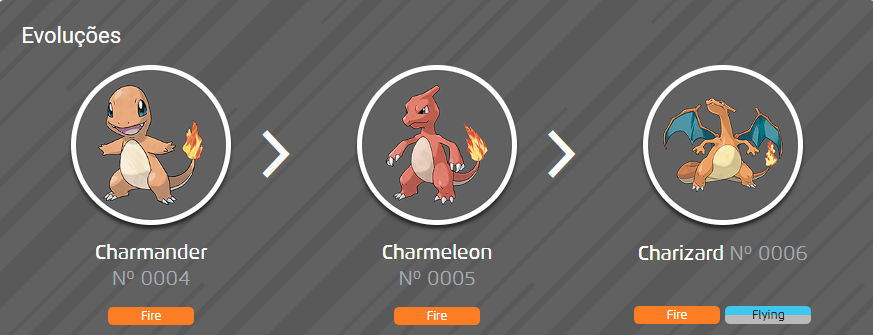
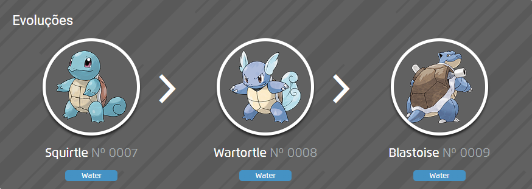
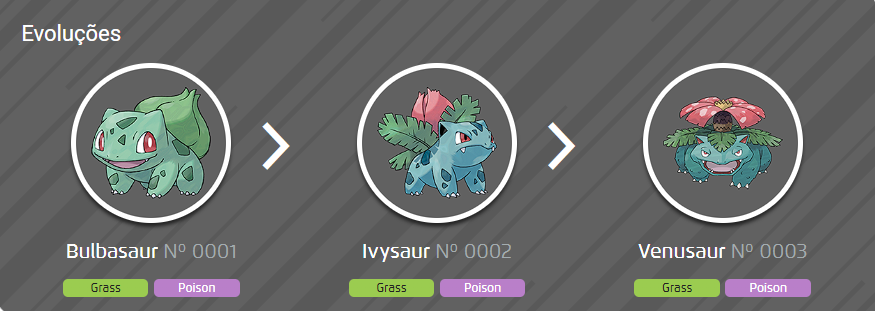

Charmander
Charmander é um Pokémon do tipo Fogo. Ele evolui para Charmeleon e, em seguida, para Charizard.

Mega-Evolução
Charmander pode mega-evoluir para Mega Charizard X ou Mega Charizard Y.
Mega Charizard X é do tipo Fogo/Dragão e apresenta uma coloração diferente, com predominância de azul e preto.
Mega Charizard Y mantém o tipo Fogo e tem um design mais aerodinâmico.
As mega-evoluções de Charizard foram apresentadas pela primeira vez no anime durante a série "Pokémon XY", nos episódios onde Ash enfrenta o torneio da Mega Evolução.


Squirtle
Squirtle é um Pokémon do tipo Água. Ele evolui para Wartortle e, em seguida, para Blastoise.

Mega-Evolução
Squirtle pode mega-evoluir para Mega Blastoise, que se torna um Pokémon ainda mais poderoso, com canhões de água em seus ombros.
A mega-evolução de Blastoise também foi introduzida na série "Pokémon XY".

Bulbasaur
Bulbasaur é um Pokémon do tipo Planta/Venenoso. Ele evolui para Ivysaur e, em seguida, para Venusaur.

Mega-Evolução
Bulbasaur pode mega-evoluir para Mega Venusaur, que tem uma flor ainda mais impressionante e maior em suas costas.
A mega-evolução de Venusaur foi introduzida também na série "Pokémon XY".